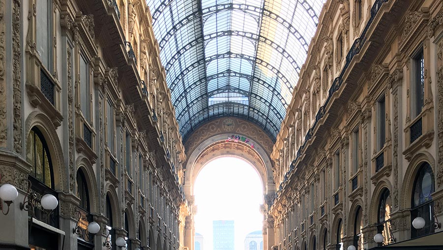
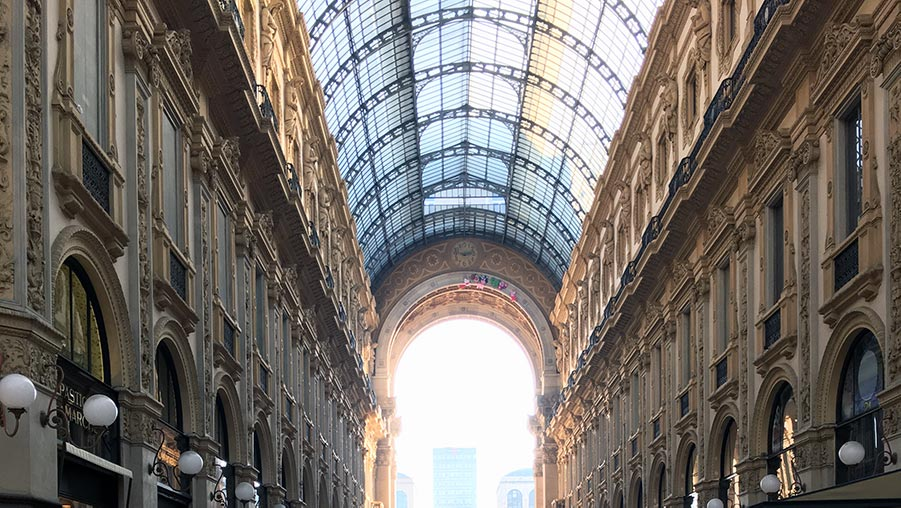

Milan
Milan is the fashion capital of the world, however, there is much more to this Italian city. We were here for three days and a must-do was the main church. We stopped here just before sunset and enjoyed the amazing view from the top deck. With views of the whole city including the old malls and feature tiles. While we were here we also visited the Alfa Romeo museum, perfect for car-lovers alike, this had all the models dating back to when they started in 1910.
Cinque Terre
The Cinque Terre are a well renowned Italian Landmark. Know for its colourful quaint villages and seaside location. The colours are bright, yellows, reds, pinks and orange and all the biuldings are painted to match. You can walk both detections.
If you are feeling tired there is also a train running along the coast that stops in all villages, and you can stay the night in any village. If you are feeling adventurous there are many tracks up the hill, to smaller villages with petite churches and views of the coast. The 5 villages are Monterosso al Mare, Vernazza, Corniglia, Manarola and Riomaggiore. Hence the name Cinque meaning five and Terre meaning earth and terraces.
Top tip for this location is to walk slowly and stop at all the villages (as the trains run into the night) try some delicious Italian delicacies .

Positano
This is a small village on the Amalfi coast with an amazing atmosphere. This has beautiful views and rugged country. If you are up for a walk, you can do the Path of the Gods, a scenic trail with views into the horizon.

.jpg)

Bardoneccia
Italy isn’t normally the place you would associate with skiing, however with its picture-perfect mountains, this is definitely the place to go. Whether you are a beginner or and pro, there is something for everybody and even cafes and restaurants halfway up.


 
